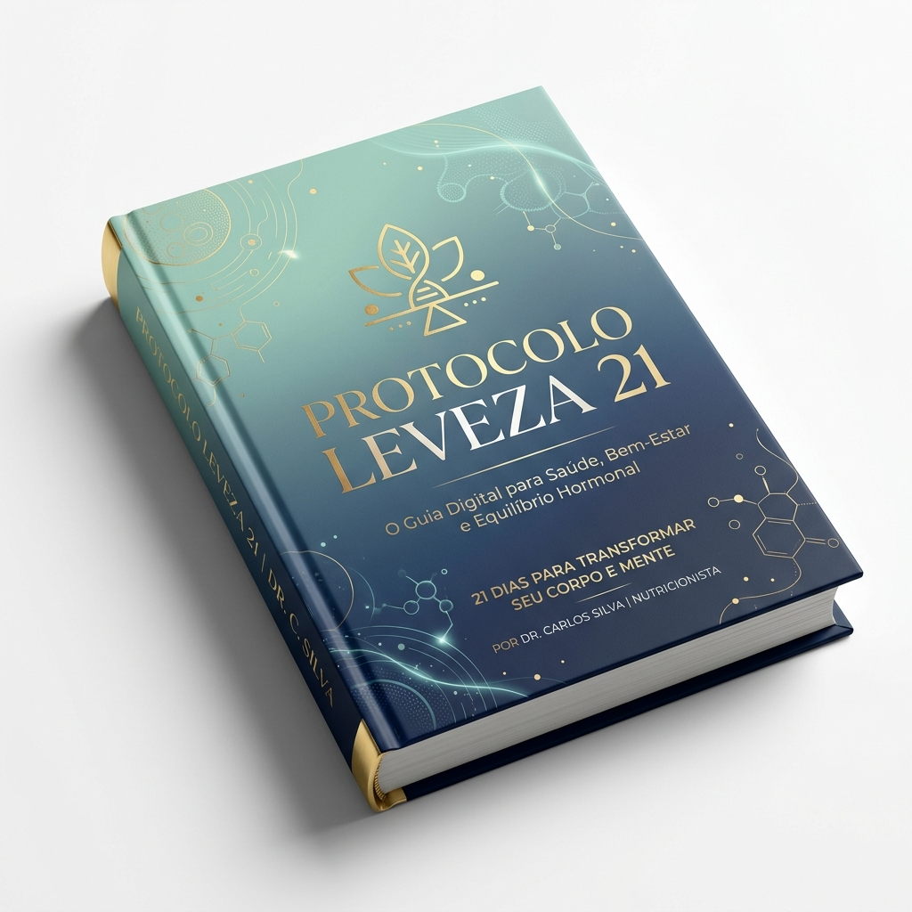

Um protocolo prático de nutrição funcional e psicologia alimentar que desativa a fome emocional e reprograma seu metabolismo corporal de dentro para fora. Sem restrições extremas e sem sofrimento.
Por que as dietas tradicionais falham? A resposta está nos seus hormônios, não no seu caráter.
Quando você passa por estresse acumulado ou restrição alimentar extrema, seu corpo entra em modo de preservação. A glândula adrenal dispara o cortisol cronicamente elevado, iniciando o ciclo destrutivo.
Este hormônio bloqueia sua área de tomada de decisão racional, confunde a fome física com a emocional e comanda as células adiposas a reter gordura, especialmente na região abdominal.
A verdade libertadora: A culpa nunca foi sua ou da sua falta de força de vontade. É uma reação bioquímica. Enquanto o cortisol estiver no controle, seu corpo se recusará a queimar gordura de forma real.
Para emagrecer de forma definitiva, você precisa desarmar esse dispositivo de alarme metabólico. É exatamente isso que faremos em 21 dias.
O Protocolo Leveza 21 foi projetado para quebrar o ciclo do cortisol de forma imediata. Ao integrar as últimas descobertas da nutrição funcional e da psicologia do comportamento, nós desaceleramos o sistema nervoso simpático, permitindo que a serotonina volte a circular livremente.
Coma alimentos reais e saborosos. Zero sofrimento ou contagem obsessiva de calorias.
Uma redução perceptível da ansiedade alimentar e uma sensação imediata de leveza emocional.
Quando os hormônios do estresse se acalmam, o metabolismo abre as comportas de armazenamento de gordura.

Dividido em três módulos práticos desenvolvidos para desprogramar a autossabotagem mental e metabólica.
Identifique e desative a fome emocional no exato momento em que ela tenta sequestrar sua mente. Você vai aprender a distinguir a fome física real da busca urgente por recompensa de dopamina.
A jornada de reestruturação do seu ecossistema hormonal acontece em duas etapas estratégicas estruturadas para evitar o platô metabólico e garantir adaptação segura.
Nesta primeira etapa, introduzimos alimentos ricos em precursores de serotonina e fitoquímicos calmantes. O objetivo é desligar a resposta de "luta ou fuga" metabólica.
Com o cortisol equilibrado, estimulamos o glucagon e as enzimas termogênicas naturais para usar as células de gordura acumulada como combustível limpo e constante.
Inclui uma tabela completa com ideias de refeições fáceis e substituições para você aplicar no seu dia a dia sem complicar sua rotina.
Transforme refeições do dia a dia em potentes aceleradores de queima energética. Saiba como lidar com momentos críticos de compulsão por ansiedade usando hacks funcionais inteligentes.
Hacks caseiros e alimentos funcionais que bloqueiam os efeitos colaterais intestinais mais comuns.
Estratégia de distribuição de aminoácidos para evitar a perda muscular e a flacidez acelerada.
Como manter seu peso estável após diminuir ou finalizar o uso de medicação agonista (Mounjaro).
Se você utiliza ou planeja utilizar medicação de nova geração (como Mounjaro ou similar), sabe que a perda de apetite acelerada pode ser um desafio. Comer pouco sem a nutrição adequada leva à perda severa de massa muscular e à desaceleração metabólica crônica.
Este anexo premium foi desenvolvido clinicamente para garantir que você forneça os micronutrientes corretos para o seu corpo, blindando sua saúde e maximizando os resultados.
Tabela alimentar com foco em alimentos densos em nutrientes para quem tem saciedade precoce.
Combinações alimentares específicas que evitam o refluxo gástrico e constipação comum da medicação.
Veja o relato de pessoas que desativaram a autossabotagem e conquistaram a leveza metabólica.
"Sempre achei que faltava força de vontade. Quando fiz o Protocolo e apliquei a Ancoragem Respiratória de 3 minutos, entendi que era puro estresse e cortisol alto. Em 3 semanas, eliminei 4,5 kg sem passar fome e, o melhor, sem aquela culpa horrível."
"Estava usando Mounjaro há 2 meses e sofria demais com enjoos e azia. O Anexo de Tirzepatida do guia salvou minha rotina. As receitas rápidas e densas me ajudaram a manter meus músculos e acabar com os efeitos colaterais. Indispensável!"
"A liberdade de não ter que pesar comida ou cortar o que gosto é indescritível. O módulo de substituições contra fissuras é sensacional. O Protocolo Leveza me trouxe paz mental e o corpo que eu queria."
Pagamento Único. Sem Mensalidades.
Receba o Guia Completo Protocolo Leveza 21 + Módulo Antissabotagem + Cronograma Prático + Guia de Substituições Inteligentes + Anexo Premium Tirzepatida.
QUERO ME LIBERTAR DA CULPAVocê tem 7 dias completos para testar o protocolo. Se por qualquer motivo você achar que as técnicas respiratórias, o cronograma prático ou o anexo complementar não trouxeram leveza e resultados imediatos, basta enviar um único e-mail para receber 100% do seu reembolso sem burocracia ou perguntas.
Esclareça suas principais dúvidas sobre o funcionamento do protocolo.
Sim! O Protocolo Leveza 21 foi desenvolvido originalmente como um método natural focado em equilibrar o cortisol e regular o comportamento alimentar. O Anexo sobre Tirzepatida é um bônus de altíssimo valor incluído para quem utiliza ou planeja utilizar a medicação, mas o conteúdo principal é universal e traz benefícios metabólicos para qualquer pessoa.
O Protocolo Leveza 21 é um produto 100% digital. Assim que sua compra for aprovada pelo checkout seguro, você receberá automaticamente em seu e-mail os dados de acesso para download dos arquivos do e-book em formato PDF de alta resolução, otimizado para leitura em celulares, tablets ou computadores.
De forma alguma. Todos os alimentos sugeridos nas duas fases do cronograma e no guia de substituições inteligentes são simples de encontrar em qualquer mercado local. Priorizamos a nutrição funcional realista com alimentos práticos e acessíveis.
O protocolo apoia-se em conceitos sólidos de endocrinologia comportamental (relação entre estresse, cortisol e grelina/leptina), neurociência cognitiva (modulação do córtex pré-frontal via respiração diafragmática) e nutrição funcional (efeito de fitoquímicos específicos na saciedade e inflamação celular).
Não se preocupe. Conforme detalhado em nossa garantia blindada, você tem até 7 dias após a compra para solicitar o cancelamento e receber o valor integral de volta caso sinta que o guia não atendeu suas expectativas.
Versão A
Versão B